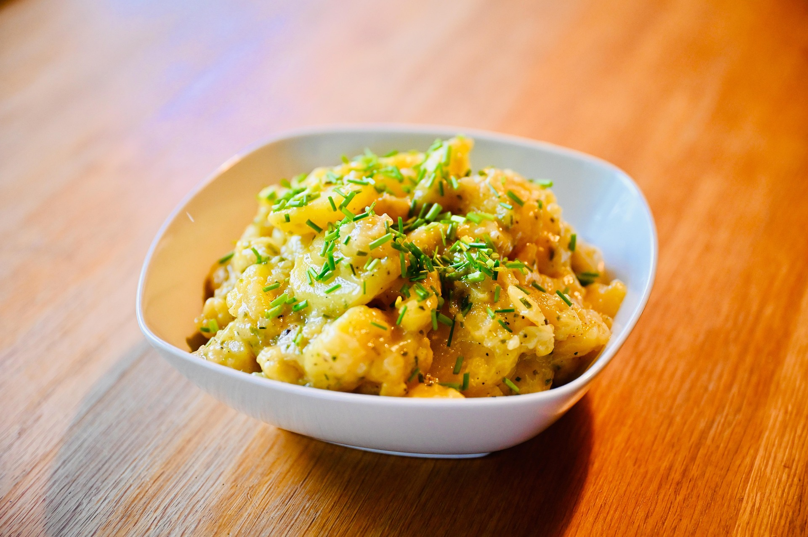

Kartoffelsalat

Zutaten für wieviel
- 50 ml milder Essig
- 70 ml hochwertiges Speiseöl
- 2 EL Schnittlauchröllchen
- 500 g gekochte Pellkartoffeln
- 120 ml Brühe
- Salz
- Pfeffer
Zubereitung
Als erstes Essig und Öl in einer größeren Schüssel vermischen. Dabei sollte darauf geachtet werden, dass der Ölanteil etwas höher als der Essiganteil ist.
Danach heiße Brühe in die Schüssel geben und alles mit einem Schneebesen vermischen. Anschließend die gehackten Schnittlauchröllchen dazu geben.
Zum Abschluss mit Salz und Pfeffer nach Belieben würzen und nochmal alles verrühren. Damit ist das Dressing für den Kartoffelsalat fertig.
Als nächstes die Kartoffeln kochen und anschließend pellen, solange sie noch heiß sind. Die geschälten Kartoffeln danach zerdrücken und in die Schüssel mit dem Dressing dazu geben.
Als letzten Schritt alle Zutaten in der Schüssel nochmal miteinander vermengen und das Gericht ist fertig.
Rezept erstellt von
 Timo
Timo